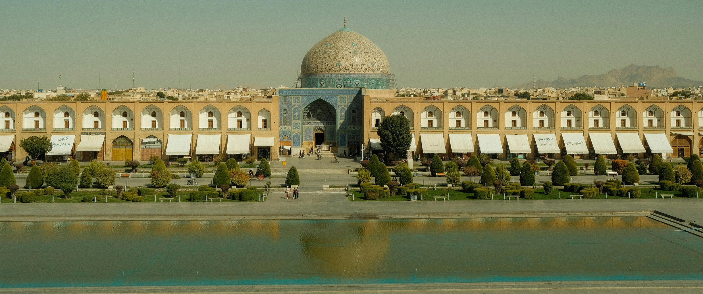
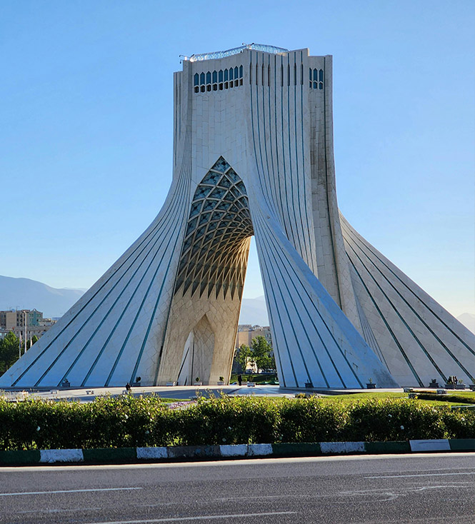
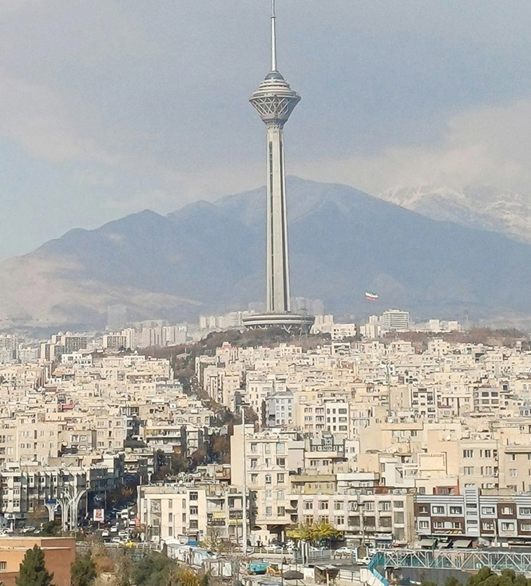
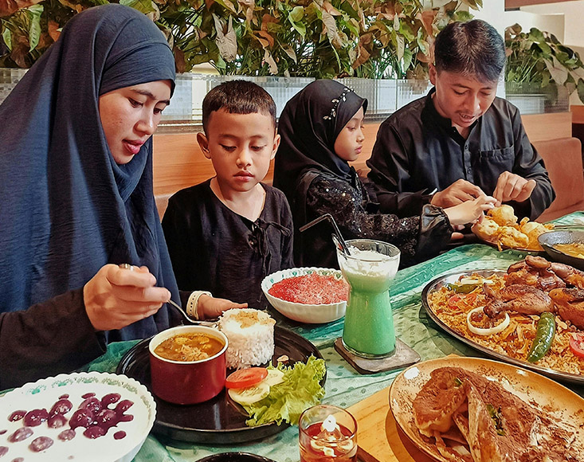
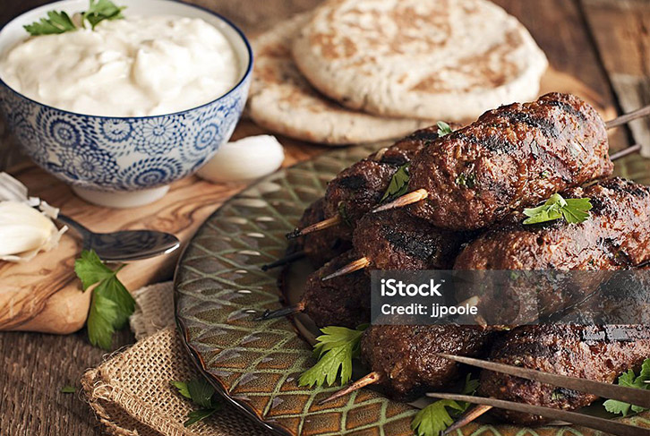

Irán su cultura y gastronomía

Irán es un país ubicado en el oeste de Asia y uno de los territorios con mayor riqueza histórica y cultural del mundo. Conocido antiguamente como Persia, posee na civilización milenaria que ha influido profundamente en el arte, la arquitectura, la literatura, la gastronomía y las tradiciones de numerosos pueblos de Oriente Medio y Asia Central.


La nación iraní se caracteriza por a diversidad de sus paisajes, que incluyen desiertos, montañas, jardines y grandes ciudades históricas. Su capital es Teherán, centro político y cultural del país. Además, Irán cuenta con una amplia herencia cultural representada en monumentos, mezquitas, bazares y sitios a rqueológicos como Persépolis, antigua capital ceremonial del Imperio Persa.

La cultura iraní se distingue por su fuerte tradición artística y humanista. La poesía, la música, la caligrafía y la hospitalidad forman parte esencial de la identidad del país. Celebraciones tradicionales como Nowruz, el año nuevo persa, reflejan la conexión histórica de la sociedad iraní con la naturaleza, la renovación y la convivencia familiar.

el ámbito gastronómico, Irán es reconocido por una cocina rica en aromas, especias y colores, donde ingredientes como el azafrán, el arroz, las hierbas frescas y los frutos secos ocupan un lugar fundamental. La gastronomía iraní representa una mezcla entre tradición, historia y diversidad regional, convirtiéndose en una expresión importante de su patrimonio cultural.